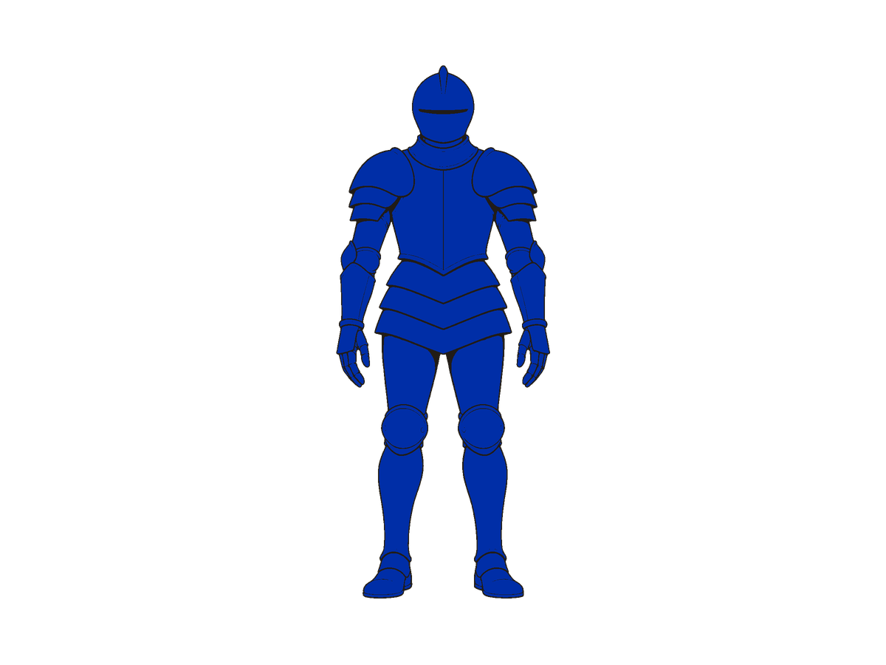

A propriedade intelectual
A propriedade intelectual entra no regime do OIC como parte da infraestrutura pela qual a plataforma define o que pode ser acessado, mantido, alterado, retirado, auditado e contestado, e não como tema paralelo ou superior à tutela do consumidor. A exclusividade passou a organizar a concorrência e a fruição, e a função social, lida a partir do art. 5º, XXIX, da Constituição1, faz dela um campo de compatibilização com o CDC.
Por que a propriedade intelectual entra num regime de proteção do consumidor?
Em ecossistemas de consumo digital contínuo, a propriedade intelectual não funciona só como proteção da criação ou como exclusividade econômica abstrata, e funciona também como parte da infraestrutura jurídica pela qual a plataforma define o que pode ser acessado, mantido, alterado, retirado, auditado e contestado. Por isso ela não é tema paralelo nem hierarquicamente superior à tutela do consumidor, porque incide no interior do regime de fornecimento, como elemento de governança do objeto fruído. A pergunta relevante deixa de ser quem detém, em abstrato, a prerrogativa de modificar o sistema e passa a ser quais limites incidem quando esse controle, fundado em exclusividade, é exercido sobre fruição continuada, sobre expectativas incorporadas ao vínculo e sobre as condições de verificabilidade e contestação da prestação.
De onde vem
Em ecossistemas de consumo digital contínuo, ela não funciona apenas como técnica de proteção da criação ou como instrumento de exclusividade econômica abstrata. Opera, na prática, como parte da infraestrutura jurídica pela qual a plataforma define o que pode ser acessado, mantido, alterado, retirado, auditado e contestado.p. 680
É necessário impedir que a propriedade intelectual funcione como tema paralelo, concorrente ou hierarquicamente superior à tutela do consumidor. Em serviços digitais contínuos que operam Objetos Imateriais de Consumo, a exclusividade não paira acima da relação como escudo abstrato de titularidade. Ela incide no interior do regime de fornecimento, como elemento de governança do objeto fruído.p. 680
Não basta perguntar quem controla tecnicamente o ambiente ou quem detém, em abstrato, a prerrogativa de modificar o sistema. A pergunta juridicamente relevante é outra: quais limites incidem quando esse controle, fundado em exclusividade, é exercido sobre fruição continuada, sobre expectativas legitimamente incorporadas ao vínculo e sobre as condições de verificabilidade e contestação da prestação.p. 680
A propriedade intelectual não deve ser reduzida nem demonizada, já que a exclusividade continua legítima e cumpre funções reais de incentivo, organização e proteção, mas ela não é autorização automática para opacidade, mutabilidade oportunista ou blindagem contra controle. Onde a exclusividade serve para preservar criação e organizar o ecossistema, permanece inteligível em seus próprios termos. Onde opera como técnica de reconfiguração unilateral da utilidade, de bloqueio de auditabilidade, de compressão da reversibilidade ou de naturalização de sanções opacas, passa a integrar o problema dogmático da governança privada e precisa ser reconduzida aos limites da função social, da tutela do consumidor e da contenção do poder privado. Deixa, assim, de ser argumento de imunidade e passa a ser campo de compatibilização.
De onde vem
Nesse quadro, a propriedade intelectual não deve ser reduzida nem demonizada. A exclusividade continua legítima e cumpre funções reais de incentivo, organização e proteção. O ponto é apenas recusar sua leitura como autorização automática para opacidade, para mutabilidade oportunista ou para blindagem contra controle.p. 680
Quando a exclusividade passa a operar, no contexto do fornecimento, como técnica de reconfiguração unilateral da utilidade, de bloqueio de auditabilidade, de compressão da reversibilidade ou de naturalização de regimes sancionatórios opacos, ela deixa de ser simples proteção de ativo e passa a integrar o próprio problema dogmático da governança privada do OIC.p. 680
O que se põe em exame não é o direito exclusivo em si, mas o modo como ele se projeta sobre objetos imateriais de consumo cuja utilidade depende de ambiente governado. Onde a exclusividade serve para preservar criação e organizar o ecossistema, ela permanece inteligível em seus próprios termos. Onde serve para opacidade estrutural, reconfiguração oportunista, bloqueio de auditabilidade e captura da fruição sob linguagem de licença e segredo, ela precisa ser reconduzida aos limites impostos pela função social, pela tutela do consumidor e pela contenção do poder privado.p. 681
Em vez de funcionar como argumento de imunidade, a propriedade intelectual passa a ser tratada como campo de compatibilização.p. 681
Como a propriedade intelectual mudou a concorrência nos mercados imateriais?
Quando o objeto econômico deixa de ser coisa entregue e circulável e passa a ser bem imaterial contínuo, mediado por plataforma, conta, catálogo, interface e regras de acesso, o que se disputa muda de natureza, e passa a importar controlar quem entra, por onde, em que condições permanece e a que custo consegue sair. As fricções que tornam a liderança contestável nos bens materiais, como capacidade instalada, logística e acesso a insumos, são em parte substituídas por efeitos de rede, lock-in, que é o aprisionamento do usuário pelo custo de sair, padronização de interfaces e acumulação de dados. A concorrência tende a se deslocar para a disputa por posição de gatekeeping, o controle das portas de entrada do ecossistema, e o poder de mercado vira comando sobre a infraestrutura em que a escolha do consumidor se torna possível.
De onde vem
Quando o objeto econômico deixa de ser um bem material, entregue e circulável como coisa, e passa a ser um bem imaterial contínuo, mediado por plataforma, por conta, por catálogo, por interface e por regras de acesso, aquilo que se disputa entre agentes econômicos muda de natureza. Em vez de competir apenas por eficiência produtiva, por preço ou por qualidade intrínseca de um produto, passa a importar controlar o acesso, isto é, definir quem entra, por onde entra, em quais condições permanece e sob quais custos consegue sair.p. 232
Capacidade instalada, logística, custos marginais, acesso a insumos e dispersão produtiva funcionam, em regra, como travas que tornam a liderança relevante, mas mais contestável ao longo do tempo.p. 233
Em bens e serviços imateriais mediados por plataformas, a dinâmica se reorganiza porque parte dessas fricções é substituída por mecanismos de concentração próprios da infraestrutura digital. A não rivalidade e a reprodutibilidade a custo marginal reduzido não eliminam competição, mas deslocam o terreno da disputa para efeitos de rede, lock-in, padronização de interfaces e protocolos, economias de escala informacional e acumulação de dados.p. 233
O que se disputa, portanto, é a infraestrutura que torna consumível a promessa, e não apenas a promessa em abstrato. Por isso, a concorrência nas economias de plataforma tende a assumir um desenho assimétrico, se deslocando da disputa por produtos para a disputa por posição de gatekeeping sobre ecossistemas técnicos e simbólicos.p. 232
O “poder de mercado” exacerba o campo da participação em vendas, tornando-se comando sobre a própria infraestrutura na qual a “escolha” do consumidor se torna possível.p. 232
A propriedade intelectual entra nesse quadro como componente material da arquitetura de fechamento. Como a reprodutibilidade tenderia a dissolver o preço dos bens imateriais, a renda depende de reintroduzir escassez por decisão institucional. Quando essa decisão se acopla a contratos de licença, contas, DRM, que é a gestão de direitos digitais, catálogos e autenticação, a circulação passa a ser tratada como infração e a fruição se converte em autorização. De Ladislau Dowbor vem a imagem do latifúndio jurídico, a exclusividade hipertrofiada que passa a reter utilidade social e a cobrar pedágio sobre acesso e difusão. O mesmo cercamento alcança o que o consumidor produz no ecossistema. A cláusula sobre conteúdo gerado por usuários não é, por si, ilícita, porque pode cumprir funções de hospedagem e circulação, e o problema surge quando a autorização padrão vai além do necessário e transfere à plataforma a titularidade das obras derivadas produzidas no próprio uso.
De onde vem
É aqui que os direitos de propriedade intelectual deixam de aparecer como título jurídico periférico e passam a operar como componente material da arquitetura de fechamento. O ponto econômico decisivo é simples e direto, pois, no mercado de bens imateriais, a reprodutibilidade tenderia a dissolver o preço, de modo que a renda depende de reintroduzir escassez por decisão institucional. Quando essa decisão se acopla a contratos de licença, contas, DRM, catálogos e mecanismos de autenticação, o incentivo à criação cede espaço a uma tecnologia de bloqueio, o que faz com que a circulação seja tratada como infração e a fruição se converta em autorização.p. 234
Sigla para Digital Right Management, “Gestão de Direitos Digitais”.p. 234
A metáfora do “latifúndio jurídico”, em Dowbor, descreve uma disfunção teleológica interna ao regime de Propriedade Intelectual: situações em que a exclusividade, por hipertrofia de escopo, duração e encadeamentos de licenças, deixa de operar predominantemente como técnica temporária de estímulo à criatividade futura e passa a funcionar como mecanismo de retenção artificial de utilidade social e de cobrança de pedágios sobre acesso, recombinação e difusão do conhecimento tecnicamente reproduzível (Dowbor, 2024, p. 44-45).p. 235
Em termos contratuais, a presença de cláusulas sobre conteúdo gerado por usuários (UGC) não é, por si, ilícita, pois pode cumprir funções operacionais de hospedagem, disponibilização e circulação do conteúdo em ecossistemas digitais.p. 237
Embora modelos de UGC possam exigir licenças funcionalmente necessárias à circulação do conteúdo no ecossistema, o problema jurídico emerge quando a autorização padrão se expande para além do necessário e se converte em apropriação automática do conteúdo gerado pelo usuário, transferindo à plataforma a titularidade de interações criativas e obras derivadas produzidas no próprio uso.p. 237
O resultado é uma economia de permissões cumulativas, em que cada parcela de acesso funciona como chave e o acúmulo de chaves se converte em poder de mercado, porque sobre a mesma experiência se sobrepõem software, conteúdos protegidos por direitos autorais, sinais distintivos, design e licenças. No extremo, Dowbor descreve a tragédia dos anti-comuns, conceito formulado por Michael Heller e desenvolvido com Rebecca Eisenberg, em que a fragmentação de exclusividades distribui poderes de veto e torna improvável a recombinação. Para o consumo, daí resulta que o signo de produto, no discurso comercial, pode encobrir uma fruição governada por autorizações parciais, o que reforça a necessidade de tornar verificáveis as restrições que de fato incidem sobre a utilidade prometida. A descrição é econômica e não desfaz a qualificação jurídica, já que o art. 3º, § 1º, do CDC2 basta para compreender o OIC como produto imaterial, como mostra o capítulo sobre o objeto.
De onde vem
O que se consolida é uma economia de permissões cumulativas, na qual cada parcela de acesso funciona como chave, e o acúmulo de chaves se converte em poder de mercado.p. 237
Sob o recorte em vista, tal processo se manifesta por via da sobreposição de camadas de controle incidentes sobre a mesma experiência. Pode-se citar, por exemplo, software e código, conteúdos protegidos por direitos autorais, sinais distintivos, design e regimes contratuais de licença, de modo que cada camada pode operar como base para restringir, modular ou tarifar usos e circulações.p. 240
O conceito de tragédia dos anti-comuns, formulado por Michael Heller e desenvolvido com Rebecca Eisenberg, descreve um regime em que a fragmentação de direitos de exclusividade distribui entre múltiplos titulares poderes de veto sobre partes, camadas ou componentes de um mesmo recurso, fazendo com que o uso eficiente dependa menos de viabilidade técnica e mais de coordenação jurídica custosap. 239
Para o consumo, o efeito relevante é que o signo de “produto” pode encobrir uma fruição governada por autorizações parciais, reforçando a necessidade de tornar verificáveis, em termos de auditabilidade, as restrições efetivamente incidentes sobre a utilidade prometida quando a governança por títulos, licenças e controles de acesso degrada o valor funcional da experiência.p. 240
O que aparece como produto no discurso comercial, na prática, passa a funcionar como feixe de autorizações fragmentadas, revogáveis e condicionais.p. 240
O art. 3º, § 1º, do CDC2 já oferece base suficiente para compreender o OIC como produto imaterial.p. 574
Por que a questão não é ser contra ou a favor da propriedade intelectual?
A crítica de Dowbor não se dirige contra a propriedade intelectual. Ele reconhece a legitimidade histórica do incentivo ao inventor e ao autor e situa o ponto de inflexão no momento em que o instrumento se converte em cobrança rentista por acesso. Isso ocorre, por exemplo, quando a exclusividade dura décadas além dos anos em que o lucro se realiza ou quando os direitos ficam quase sempre com intermediários, e não com o criador. A discussão deixa de ser a de quem é contra ou a favor da propriedade intelectual e passa a ser a de como calibrá-la teleologicamente, isto é, pela finalidade, medindo até quanto a exclusividade ainda é incentivo e a partir de que momento se torna pedágio estrutural. O questionamento não é moral, e sim de desenho institucional, e no recorte do consumo ele se traduz em critérios de lealdade, transparência material e preservação do mínimo funcional legitimamente esperado.
De onde vem
Dowbor não procede a uma crítica simplista à propriedade intelectual. Ao contrário, reconhece a legitimidade histórica do incentivo, entendido como remuneração privilegiada do inventor ou do autor, de modo a estimular avanços científicos e culturais (Dowbor, 2024, p. 36). O ponto de inflexão, porém, ocorre quando o instrumento perde validade social ao converter-se em cobrança rentista por acesso.p. 242
O argumento é de economia política, pois, se a realização do lucro se concentra majoritariamente nos primeiros anos de exploração comercial (Dowbor, 2024, p. 43), a manutenção da exclusividade por décadas opera como renda sem função incentivadora proporcional e impõe custo social massivo à pesquisa e ao reuso criativo para sustentar fluxos privados concentrados.p. 238
O autor, enquanto sujeito da criação intelectual, pouco tem a ver com essa dinâmica, uma vez que os direitos são quase sempre de intermediários (Dowbor, 2024, p. 44).p. 238
É exatamente nesse ponto que a discussão deixa de ser se somos “contra ou a favor da propriedade intelectual” e se torna “como podemos calibrar teleologicamente a propriedade intelectual”. Porque, se a função econômica real do cercamento é reinstalar escassez onde a técnica dissolveria o preço, o problema jurídico relevante passa a ser medir até quanto a exclusividade ainda é incentivo, e a partir de que momento ela se torna um pedágio estrutural. O questionamento não é moral; trata-se de um desenho institucional, especialmente quando a plataforma já domina o acesso e consegue converter qualquer fricção jurídica em vantagem concorrencial.p. 241
Sob o recorte em pauta, isso recoloca a necessidade de se definir critérios de lealdade, transparência material e preservação do mínimo funcional legitimamente esperado nos ambientes de consumo mediados por plataformas.p. 242
Por que a propriedade intelectual da plataforma não é um bloco único?
Para descrever o que a propriedade intelectual faz dentro do fornecimento, a referência central é Denis Borges Barbosa, para quem a propriedade industrial sempre consistiu numa série de técnicas de controle da concorrência. A exclusividade não é qualidade espontânea do bem imaterial, e sim resultado de intervenção jurídica que cria escassez artificial, o que impede tratar todo poder da plataforma sobre a fruição como se decorresse da natureza do ativo protegido. Daí a distinção que o discurso empresarial costuma embaralhar. Marcas, direitos autorais, software, sinais distintivos e interfaces não conferem o mesmo tipo nem a mesma extensão de exclusividade, e o ordenamento não autoriza tratar todo controle técnico do ambiente como se decorresse de uma soberania unitária e irrestrita.
De onde vem
A propriedade intelectual não atua apenas como proteção periférica de ativos isolados, mas como técnica jurídica de organização de mercado e delimitação de exclusividades sobre bens imateriais. É nessa chave que Barbosa afirma que, nas economias de mercado, a propriedade industrial sempre consistiu em “uma série de técnicas de controle da concorrência”, destinadas a assegurar o investimento empresarial em elementos imateriais como nome, marca, tecnologia e imagem institucional (Barbosa, 2010, p. 73).p. 682
A exclusividade não é qualidade espontânea do bem imaterial; é resultado de intervenção jurídica que organiza fluxos de uso, reprodução, circulação e exploração (Barbosa, 2010, p. 77-79; p. 113). Isso importa porque impede naturalizar a posição da plataforma como se todo poder que ela exerce sobre a fruição decorresse imediatamente da “natureza” do ativo protegido.p. 682
A infraestrutura de propriedade intelectual que sustenta a plataforma não é homogênea. Marcas, direitos autorais, software, sinais distintivos, interfaces e institutos conexos não conferem o mesmo tipo nem a mesma extensão de exclusividade. O ordenamento brasileiro não autoriza tratar todo controle técnico do ambiente como se decorresse de uma soberania unitária e irrestrita sobre a experiência consumida. A própria ideia de propriedade intelectual já nasce como construção normativa de escassez artificial, criada para tornar economicamente apropriável aquilo que, em seu estado natural, circularia sem barreiras equivalentes.p. 682
Cada regime atua numa camada própria. As marcas delimitam pertencimento, autenticidade e a distinção entre o oficial e o exterior ao ecossistema, e a base legal está nos arts. 122 e 123, I, da Lei nº 9.279/19963. Os direitos autorais e conexos organizam a reprodução, a circulação e a transformação dos componentes expressivos da experiência, com remissão aos arts. 7º, 28 e 29 da Lei nº 9.610/19984. O direito de software se projeta sobre execução, atualização, modificação e estabilidade do ambiente, e os arts. 7º e 8º da Lei nº 9.609/19985 tratam do prazo de validade técnica da versão comercializada e dos serviços técnicos complementares devidos nesse prazo. Do lado do consumidor, essa concentração jurídica sobre signos, código e conteúdo produz vulnerabilidade semiótica, porque ele passa a depender do fornecedor também para saber o que é autêntico, o que é oficial e quando a experiência equivale ao que foi prometido.
De onde vem
Marcas delimitam pertencimento, autenticidade e distinção entre o oficial e o exterior ao ecossistema. Direitos autorais e direitos conexos organizam a possibilidade de reprodução, circulação e transformação dos componentes expressivos da experiência. O direito de software, por sua vez, projeta-se diretamente sobre execução, atualização, modificação e estabilidade do ambiente.p. 683
“Art. 122. São suscetíveis de registro como marca os sinais distintivos visualmente perceptíveis [...]. Art. 123. [...] considera-se: I - marca de produto ou serviço: aquela usada para distinguir produto ou serviço de outro idêntico, semelhante ou afim, de origem diversa;” (Brasil, [2024]c).p. 683
“Art. 7º São obras intelectuais protegidas as criações do espírito, expressas por qualquer meio ou fixadas em qualquer suporte, tangível ou intangível, conhecido ou que se invente no futuro, tais como:” (Brasil, [2021]).p. 683
“Art. 7º O contrato de licença de uso de programa de computador, o documento fiscal correspondente, os suportes físicos do programa ou as respectivas embalagens deverão consignar, de forma facilmente legível pelo usuário, o prazo de validade técnica da versão comercializada.” (Brasil, [1998]).p. 683
“Art. 8º Aquele que comercializar programa de computador [...] fica obrigado, no território nacional, durante o prazo de validade técnica da respectiva versão, a assegurar aos respectivos usuários a prestação de serviços técnicos complementares relativos ao adequado funcionamento do programa, consideradas as suas especificações.” (Brasil, [1998]).p. 683
O consumidor não depende apenas do fornecedor para acessar tecnicamente o objeto; depende dele também para compreender o que é autêntico, o que é oficial, o que conta como pertencimento válido, o que pode circular, o que pode ser mantido e sob quais condições a experiência será tida como equivalente àquilo que foi prometido. A concentração jurídica sobre signos, código, conteúdo e canais de circulação produz vulnerabilidade semiótica não apenas por déficit de informação, mas porque a plataforma controla os próprios meios pelos quais a oferta é entendida, a equivalência é percebida, a perda é reconhecida e a prova é produzida.p. 687



O que a proteção do software autoriza e o que ela não autoriza?
O software é o ponto mais sensível, porque a plataforma frequentemente age como se a proteção da infraestrutura tecnológica lhe desse soberania prática sobre toda a experiência consumida. Como mostra Barbosa, a tutela do programa de computador no direito brasileiro é predominantemente autoral e recai sobre a expressão das soluções úteis, isto é, sobre o código e certas manifestações não literais, sem se organizar como patente geral sobre funcionalidade, método de operação ou experiência de uso. Mesmo quando o programa participa de efeito técnico novo e inventivo, a patente recai sobre solução técnica delimitada, e não sobre o resultado, e o algoritmo abstratamente considerado permanece livre. Barbosa registra ainda que nem todo software é patenteável entre nós e que subsiste a proibição incondicional de patentes para métodos de negócio. Isso basta para bloquear a retórica de que depender de código protegido autorizaria controle absoluto sobre mutabilidade, auditabilidade, equivalência funcional e contestação da fruição.
De onde vem
No caso do software, essa tensão ganha contorno ainda mais preciso. A plataforma frequentemente age como se a proteção jurídica da infraestrutura tecnológica lhe conferisse soberania prática sobre toda a experiência consumida, quando o regime brasileiro não entrega isso.p. 698
No direito brasileiro, a tutela do programa de computador não se organiza como patente geral sobre funcionalidade, método de operação ou experiência de uso. Sua proteção é predominantemente autoral, e mesmo quando um programa participa da obtenção de efeito técnico novo e inventivo, a patente não se projeta sobre o software como tal, nem sobre a lógica abstrata subjacente à experiência consumida. A proteção patentária recai sobre solução técnica delimitada, não sobre o resultado em abstrato nem sobre toda a funcionalidade percebida pelo usuário (Barbosa, 2010b, p. 1128; p. 1116).p. 684
Barbosa delimita com precisão que o software é primariamente protegido por regime de cunho autoral, que recai sobre a expressão das soluções úteis, isto é, sobre o código e certas manifestações não literais, mas não alcança as soluções de efeito técnico como tais.p. 685
Barbosa é categórico ao afirmar que, no direito brasileiro, nem todo software será suscetível de proteção patentária, mas apenas algumas invenções relativas a programas de computador, razão pela qual, com ainda mais força, subsiste entre nós a proibição incondicional de deferimento de patentes para métodos de negócio (Barbosa, 2010b, p. 1136).p. 685-686
Mesmo nas hipóteses excepcionais em que o programa participa de solução técnica patenteável, o algoritmo abstratamente considerado permanece livre, e o programa como tal não se converte em objeto de patente em sentido amplo (Barbosa, 2010b, p. 1123-1124). Isso basta para bloquear uma retórica muito comum nas plataformas: a de que o simples fato de o ambiente depender de código protegido autorizaria, sem resto, controle absoluto sobre mutabilidade, auditabilidade, equivalência funcional e contestação da fruição.p. 685
A contenção não leva ao extremo oposto. O software não é juridicamente neutro, porque rodá-lo e fazê-lo funcionar já envolve exercício de direito intelectual, e licença, controle de execução e disciplina de atualização são instrumentos reconhecidos de organização desse poder. Barbosa observa, porém, que a fonte primária de valor do programa está no comportamento, e não no texto, e que a proteção autoral não se estende ao método de funcionamento. Uma vez no comércio, certos efeitos subsequentes escapam ao alcance da exclusividade, e insistir em controlá-los como extensão natural do título pode configurar abuso de direito, assim como o uso de direitos de propriedade intelectual para dominar mercados ou limitar acesso pode configurar infração à ordem econômica. Com base nesse regime, é incompatível com a Constituição converter o controle técnico da infraestrutura em poder total sobre a experiência consumida, e a função social opera como trava contra essa extrapolação.
De onde vem
[...] a centralidade do software na infraestrutura da plataforma não autoriza apresentá-lo como fonte de poder jurídico ilimitado sobre tudo aquilo que o consumidor experimenta no ecossistema. Nada disso significa, por outro lado, que o software seja juridicamente neutro ou marginal. Ao contrário. Seu regime de proteção participa diretamente do controle sobre uso, execução, atualização, manutenção e exploração do programa. Rodar o software, utilizá-lo e fazê-lo funcionar já envolve exercício de direito intelectual, e não simples uso de suporte físico, o que ajuda a explicar por que a infraestrutura computacional participa imediatamente da organização da fruição do OIC (Barbosa, 2017, p. 2015; p. 1959).p. 686
Claro que a tutela do software explica parte importante do poder técnico da plataforma. Licença, controle de execução e disciplina de atualização são instrumentos juridicamente reconhecidos de organização desse poder.p. 699
Barbosa sublinha exatamente esse ponto ao observar que uma das maiores discussões no campo da propriedade intelectual aplicada ao software decorre do fato de que a fonte primária de valor do programa não está no texto em si, mas no seu comportamento, sendo possível que códigos distintos conduzam a resultados funcionais idênticos (Barbosa, 2017, p. 1899).p. 687
Embora reconheça que a proteção autoral não se limita à expressão literal das instruções, podendo alcançar também o modo de organização dos elementos que compõem o software, Barbosa adverte que, “na medida em que a forma interna esteja diretamente relacionada com a funcionalidade, não estará protegida pelo Direito de Autor”, pois este “não tutela a estrutura em si mesma”; em outras palavras, “a proteção autoral do programa não se estende ao método de funcionamento” (Barbosa, 2017, p. 1890).p. 687
Uma vez no comércio, certos efeitos subsequentes escapam ao alcance da exclusividade, e insistir em controlá-los como se tudo ainda fosse extensão natural do título pode configurar abuso de direito (Barbosa, 2010b, p. 1145; p. 1139). Isso significa que controle do código, da execução e da atualização não autoriza, sem mais, bloquear verificabilidade, neutralizar aferição de perda funcional ou reduzir a fruição a permissão descartável administrada ad nutum.p. 698-699
No direito brasileiro, a utilização dos direitos de propriedade intelectual para dominar o mercado ou limitar o acesso pode configurar infração à ordem econômica, à luz da tutela constitucional da liberdade de concorrência (Barbosa, 2017, p. 2025).p. 699
Como a proteção do programa no Brasil não se estrutura sob lógica patentária ampla sobre função, método ou resultado, mas sob regime especial predominantemente autoral, é incompatível com a Constituição converter controle técnico da infraestrutura em poder total sobre a experiência consumida.p. 706
A função social opera, aqui, como trava contra essa extrapolação.p. 707
Por que a marca e o desenho industrial importam do lado do consumidor?
A camada de signos é o outro lado do argumento. A marca é um dos exemplos mais nítidos de juridicização da camada semiótica do mercado, porque a proteção recai sobre a aptidão do sinal para identificar e distinguir produtos ou serviços. José Carlos Tinoco Soares exige da marca que seja distintiva, especial e inconfundível, e Douglas Gabriel Domingues realça a sua função publicitária e os universos simbólicos de prestígio e status associados a ela. Se o ordenamento reconhece que signos produzem efeitos econômicos, concorrenciais e jurídicos reais, não há base honesta para negar que os mesmos signos, quando governam a fruição, também estruturam expectativa, pertencimento, reputação e valor funcional percebido. Quando a camada de signos protege origem e clientela do fornecedor, a sua relevância é prontamente reconhecida, e quando estrutura o modo como o consumidor percebe autenticidade, equivalência e perda, o discurso jurídico tradicional tende a recuar. Há aí uma assimetria de visibilidade jurídica.
De onde vem
A marca oferece, entre os institutos de propriedade intelectual, um dos exemplos mais nítidos de juridicização da camada semiótica do mercado. Sua proteção não recai apenas sobre uma palavra, figura ou suporte formalmente registrável, mas sobre a aptidão do sinal para apresentar, assinalar, identificar e distinguir produtos ou serviços no tráfego econômico.p. 687-688
Não por acaso, a doutrina clássica a descreve precisamente como o sinal pelo qual o produto ou o serviço se torna conhecido e distinguido no mercado, exigindo, para o cumprimento dessa finalidade, que seja distintiva, especial e inconfundível (Soares, 2000, p. 16; p. 109).p. 688
A própria evolução da doutrina marcária revela que a centralidade econômica da marca depende menos do suporte físico que da sua capacidade de condensar identidade, fixar percepção e orientar a escolha do consumidor, inclusive por meio de sua função publicitária e da constituição de universos simbólicos associados ao produto, ao prestígio e ao status social que ele representa (Domingues, 1984, p. 70-71; p. 89).p. 689
Se o ordenamento reconhece que signos produzem efeitos econômicos, concorrenciais e jurídicos reais, não há base honesta para negar que esses mesmos signos, quando passam a governar a fruição em ecossistemas digitais contínuos, também estruturam expectativa, pertencimento, reputação, valor funcional percebido e vulnerabilidade do consumidor.p. 689
Não se trata, portanto, de descobrir um novo tipo de fenômeno, mas de corrigir uma assimetria de visibilidade jurídica. Quando a camada sígnica organiza origem, diferenciação e captação de clientela em favor do fornecedor, sua relevância é prontamente reconhecida. Quando essa mesma camada passa a estruturar os critérios pelos quais o consumidor percebe autenticidade, oficialidade, equivalência e perda relevante no interior da plataforma, a tendência do discurso jurídico tradicional é recuar diante da sua dimensão imaterial. O que esta tese propõe é precisamente recusar essa cegueira seletiva.p. 689-690
O desenho industrial dá evidência adicional. O art. 95 da Lei nº 9.279/19966 protege a forma plástica ornamental que proporcione resultado visual novo e original na configuração externa do objeto, e com isso a lei reconhece a forma ornamental como elemento de atração e diferenciação, para além da função técnica. Barbosa fala no poder de sedução da configuração estética e dá o exemplo do prato ornamentado com figura protegida, que pode ser objeto de exclusividade, enquanto o mesmo prato sem o desenho permanece livre, de modo que a fronteira da tutela está no investimento estético, e não na utilidade. Daí se segue que a visualidade das interfaces, a composição estética das skins, que são as aparências compradas para personagens, os efeitos gráficos e os sinais de raridade visualmente codificados participam da economia do pertencimento e do valor percebido. A diferença entre o objeto corpóreo ornamentado e o objeto imaterial continuamente fruído apenas desloca o suporte.
De onde vem
“Art. 95. Considera-se desenho industrial a forma plástica ornamental de um objeto ou o conjunto ornamental de linhas e cores que possa ser aplicado a um produto, proporcionando resultado visual novo e original na sua configuração externa e que possa servir de tipo de fabricação industrial.” (Brasil, [2024]c).p. 691
O ponto dogmaticamente relevante, aqui, é que a lei não se limita a proteger função técnica, utilidade material ou procedência empresarial. Ela reconhece, em chave própria, a relevância jurídica da forma ornamental como elemento de inserção mercadológica, atração e diferenciação do bem.p. 691
A proteção do desenho industrial parte precisamente da premissa de que a configuração estética do produto pode agregar-lhe poder de sedução e maior valor comercial, infletindo diretamente na escolha do público.p. 691
O exemplo é eloquente: um prato ornamentado com figura protegida pode ser objeto de exclusividade, ao passo que o mesmo prato, idêntico em tamanho, material e funcionalidade, mas desprovido daquele desenho, permanece livre à reprodução por terceiros (Barbosa, 2018, p. 50). A fronteira da tutela não está, portanto, na materialidade do bem nem na sua função prática, mas no investimento estético incorporado à sua configuração externa.p. 691
Em ambientes de consumo contínuo, a visualidade das interfaces, a composição estética de skins, os acabamentos distintivos, os efeitos gráficos, os sinais de raridade visualmente codificados e a coerência iconográfica do universo oferecido ao usuário não são elementos neutros ou exteriores à fruição. Eles participam da própria economia do pertencimento, da atratividade e do valor percebido, funcionando como componentes da governança semiótica do OIC. A diferença entre o objeto corpóreo ornamentado e o objeto imaterial continuamente fruído não apaga esse dado estrutural; apenas desloca seu suporte.p. 693-694
A analogia tem limite expresso. Ela não equipara regimes jurídicos distintos nem converte skins, interfaces ou arranjos visuais em desenhos industriais, e o passo proposto não dissolve o direito de marcas no direito do consumidor. A camada distintiva e ornamental pode assumir relevância consumerista quando opera como técnica de indução, opacidade, captura identitária ou degradação funcional relevante. A Constituição, por sua vez, liga a proteção das criações industriais e dos signos ao interesse social e ao desenvolvimento e submete a ordem econômica à função social da propriedade e à defesa do consumidor, de modo que a exclusividade é legítima, mas não metafisicamente soberana.
De onde vem
A analogia, aqui, não pretende equiparar regimes jurídicos distintos nem converter automaticamente skins, interfaces ou arranjos visuais digitais em desenhos industriais.p. 693
O passo proposto por esta tese não consiste em dissolver o direito de marcas no direito do consumidor, nem em negar a legitimidade da tutela distintiva em favor do titular.p. 690
Se assim é, a camada distintiva que integra a fruição dos OICs não pode ser tratada como mera decoração extracontábil da experiência. Ela integra a própria governança semiótica do fornecimento e, por isso, pode assumir relevância consumerista quando opera como técnica de indução, opacidade, captura identitária ou degradação funcional relevante.p. 690
De um lado, a propriedade intelectual é fundamento legítimo da organização do mercado e da previsibilidade concorrencial. O direito de propriedade é garantido constitucionalmente, e a proteção das criações industriais, das marcas e de outros signos distintivos já nasce, no texto constitucional, ligada ao interesse social e ao desenvolvimento tecnológico e econômico do país. De outro, a mesma ordem constitucional recoloca essa exclusividade dentro de limites materiais, ao submeter a ordem econômica à função social da propriedade e à defesa do consumidor. Em outras palavras, a exclusividade é legítima, mas não é metafisicamente soberana.p. 694
O que a cláusula de propriedade intelectual dos termos de um jogo revela?
O ponto aparece com nitidez na cláusula 3.2 dos Termos de Serviço da Riot Games, empresa que opera League of Legends. Nela a empresa e seus licenciantes reservam todos os direitos sobre os serviços e sobre os dados e conteúdos gerados ou disponibilizados neles, inclusive contas de usuário, código, personagens, logs de chats, que são os registros das conversas, gravações, produtos virtuais, moeda do jogo, efeitos audiovisuais, métodos de operação e jogabilidade. A mesma cláusula permite alguns usos pessoais e não comerciais, como a fan art, que é a arte feita por fãs, e proíbe usos não licenciados de marcas, conteúdo e serviços.
De onde vem
Posso fazer coisas com a propriedade intelectual da Riot (Reservamos todos os direitos à nossa PI, mas permitimos alguns usos pessoais e não comerciais, como fan art.) Nós (e nossos licenciantes) detemos e reservamos todos os direitos, titularidade e participações sobre os Serviços da Riot, assim como de todos os dados e conteúdos publicados, gerados, fornecidos ou disponibilizados de outra forma nos Serviços da Riot, ou por meio deles, inclusive contas de usuário, código de computador, títulos, objetos, artefatos, personagens, nomes de personagens, logs de chats, gravações e transmissões de jogos, locais, nomes de locais, histórias, diálogos, frases de efeito, arte, gráficos, desenhos estruturais ou de paisagens, animações, sons, composições e gravações musicais, produtos virtuais, moeda do jogo, efeitos audiovisuais, imagem e semelhança gráfica das personagens, métodos de operação e jogabilidade (coletivamente, “Conteúdo do Jogo”).p. 684
Você também concorda que, a menos que lhe concedamos uma licença, em um contrato escrito assinado, você nunca poderá usar nenhuma de nossas marcas, marcas de serviço, nomes comerciais, logotipos, nomes de domínio, slogans de marca ou trade dress. Qualquer reprodução, redistribuição ou modificação dos Serviços da Riot, ou o uso dos Serviços da Riot que não esteja de acordo com este Contrato, é expressamente proibido e poderá resultar em severas penalidades civis e/ou criminais.” (Riot Games, 2024e).p. 684
A cláusula se lê como descrição do ecossistema. Ao reservar tudo isso, a empresa não apenas protege ativos, e descreve, em termos contratuais, um ambiente em que a propriedade intelectual organiza a experiência, a autenticidade e a circulação do conteúdo fruído, de modo que o controle sobre signos, jogabilidade e visuais é parte da infraestrutura pela qual o ambiente é governado. Em League of Legends, a distintividade alcança sinais internos de oficialidade, raridade, autenticidade, prestígio e pertencimento válido. No plano da concorrência, a alteração unilateral da aparência, dos efeitos ou da inserção de um item na economia interna opera como exercício de poder concorrencial, porque redefine depois da compra o sentido e a utilidade do bem, sem que o consumidor tenha rota equivalente de recomposição fora do ecossistema.
De onde vem
Ao reservar para si e para seus licenciantes todos os direitos, titularidade e participações sobre os serviços, o conteúdo do jogo, as contas, o código, os personagens, os logs, as gravações, os produtos virtuais, a moeda do jogo, os efeitos audiovisuais, os métodos de operação e a jogabilidade, e ao proibir usos não licenciados de marcas, conteúdo e serviços, a Riot não apenas protege ativos. Ela descreve, em termos contratuais, um ecossistema em que a PI funciona como matriz de organização da experiência, da autenticidade e da circulação do conteúdo fruído.p. 684
A cláusula é reveladora porque mostra, sem rodeios, que o controle sobre signos, narrativas, jogabilidade, visuais e conteúdo não é periférico ao fornecimento. É parte da própria infraestrutura pela qual o ambiente é governado. Isso fica ainda mais sensível no caso do software.p. 684
A distintividade não opera apenas no nível da marca corporativa Riot ou da marca do próprio jogo, mas também na administração de sinais internos de oficialidade, raridade, autenticidade, prestígio, licitude de circulação, reconhecimento comunitário e pertencimento válido.p. 690
A alteração unilateral de aparência, efeitos ou inserção do item na economia interna, tal como no cenário descrito, opera como exercício de poder concorrencial porque redefine ex post o sentido e a utilidade do bem dentro da linguagem proprietária, sem que o consumidor tenha rota equivalente de recomposição fora do ecossistema.p. 234
Da cláusula o exame passa diretamente ao software, onde o ponto fica ainda mais sensível. Como a proteção autoral do programa não se estende ao método de funcionamento nem faz do titular do código titular absoluto do resultado funcional experimentado pelo usuário, o controle sobre execução, atualização e modulação não pode ser expandido, por contrato ou retórica, até apagar a densidade consumerista da fruição continuadamente fornecida. Aplicada ao caso, a construção produz um roteiro de leitura, e não uma conclusão sobre a cláusula ou sobre a empresa. A titularidade declarada continua, em princípio, legítima, e a análise se desloca do plano abstrato da existência do título para o plano concreto do seu exercício. Quando a plataforma invoca exclusividade, integridade do sistema ou proteção do software para justificar bloqueios, reconfigurações, supressões ou apagamentos, é nesse plano que incidem verificabilidade mínima, exigência de motivação, aferição de perda funcional, possibilidade de contestação e, quando cabível, recomposição dos efeitos relevantes.
De onde vem
A proteção autoral do software não se estende ao método de funcionamento em si mesmo, nem transforma o titular do código em titular absoluto do resultado funcional experimentado pelo usuário (Barbosa, 2017, p. 1890; p. 1899). Essa distinção é central, porque impede que o controle sobre execução, atualização e modulação do programa seja expandido, por contrato ou retórica, até o ponto de apagar a densidade consumerista da fruição continuadamente fornecida.p. 687
A própria ideia de propriedade intelectual convive com limitações internas e externas que tornam absurdo tratá-la como autorização irrestrita de uso e governo do ecossistema (Ascensão, 2007, [p. 3; p. 13]). Isso importa porque desloca a análise do plano abstrato da existência do título para o plano concreto do seu exercício sobre a experiência consumida.p. 696-697
Quando a plataforma invoca exclusividade, integridade do sistema, necessidade operacional ou proteção do software para justificar bloqueios, reconfigurações, supressões ou apagamentos, o problema jurídico não se encerra na validade abstrata da prerrogativa invocada. Desloca-se para o controle do modo concreto de exercício desse poder sobre a fruição governada. É nesse plano que devem incidir verificabilidade mínima, exigência de motivação, aferição de perda funcional, possibilidade de contestação e, quando cabível, recomposição dos efeitos relevantes.p. 702
Onde está, afinal, a tensão entre exclusividade e proteção do consumidor?
A tensão nasce do salto indevido entre ter um direito de propriedade intelectual e supor, a partir dele, poder total para alterar condições de uso, impor sanções privadas, suprimir trajetórias acumuladas e bloquear a reconstrução do que foi feito, e essa colisão não é teórica, e sim conflito prático de governança sobre fruição continuada. O excesso começa no vocabulário. José de Oliveira Ascensão aponta que qualificar os direitos intelectuais sob o signo da propriedade favorece a eliminação tendencial dos seus limites e tem carga ideológica. Lembra também que a regra jurídica rarifica artificialmente bens que não são raros, daí o conteúdo predominantemente negativo do direito intelectual, que confere poder de excluir terceiros, e não soberania positiva sobre toda experiência em torno do bem. A consequência é que licença revogável, mutabilidade unilateral, banimento ou apagamento de trajetória não podem ser tratados como efeitos autojustificados da mera titularidade.
De onde vem
O problema não está na existência abstrata da exclusividade, mas no salto indevido entre ter um direito de PI e supor, a partir dele, poder total para alterar condições de uso, reconfigurar a experiência, impor sanções privadas, suprimir trajetórias acumuladas e bloquear a reconstrução institucional do que foi feito.p. 695
A colisão, aqui, não é teórica. É conflito prático de governança privada sobre fruição continuadamente fornecida.p. 695
Ascensão acerta ao apontar que a qualificação dos direitos intelectuais sob o signo da propriedade favorece a eliminação tendencial de seus limites e que essa operação tem carga ideológica clara, não descritiva (Ascensão, 2007, [p. 3; p. 5]). Em consequência, licença revogável, mutabilidade unilateral, banimento ou apagamento de trajetória não podem ser tratados como efeitos autojustificados da mera titularidade de PI.p. 695-696
Ascensão é direto ao afirmar que a regra jurídica “rarifica artificialmente bens que não são raros” e que “esta é a técnica do exclusivo” (Ascensão, 2007, [p. 12]). Por isso mesmo, o conteúdo do direito intelectual é predominantemente negativo: ele não confere ao titular poder positivo ilimitado sobre o objeto, mas faculdade de exclusão perante terceiros.p. 696
Barbosa chega ao mesmo lugar pela via brasileira. Cada exclusiva existe nos limites e para as funções que lhe são constitucionalmente atribuídas, e o princípio continua sendo o da liberdade. O próprio exercício do direito autoral pode ser abusivo, a patente é monopólio instrumental que admite contenções como a licença compulsória, e a exaustão impede o controle interminável sobre o bem já colocado no comércio. Barbosa lembra ainda que o Acordo TRIPs, expressão do regime internacional da propriedade intelectual, não consagra paradigma absolutista. Isso derruba o uso da propriedade intelectual como argumento terminal, que encerraria a discussão antes de começar, e situa o encontro entre ela e o CDC no controle do modo como a exclusividade é usada na relação de consumo.
De onde vem
A mesma conclusão aparece, em chave brasileira, na leitura de Denis Borges Barbosa. A exclusividade em propriedade intelectual existe nos limites e para as funções que lhe são constitucionalmente atribuídas, não como autorização geral para governar sem freios toda a fruição do ambiente. O princípio continua sendo o da liberdade; a exclusividade é exceção funcionalmente delimitada (Barbosa, 2010, p. 84; p. 537; p. 547).p. 697
O próprio exercício do direito autoral pode ser abusivo, e a patente, como monopólio instrumental, convive com mecanismos de contenção e com a lógica da exaustão, que impede controle interminável sobre todas as formas subsequentes de fruição do bem já inserido no comércio (Barbosa, 2010, p. 110; p. 639; p. 671).p. 697
A patente, como “monopólio instrumental”, não subsiste como arbítrio soberano, admitindo meios de contenção como licença compulsória e controle de preços (Barbosa, 2010, p. 639).p. 697
O afastamento do absolutismo é explícito no regime internacional, uma vez que o Acordo TRIPs não consagra um paradigma absolutista, baseando-se em equilíbrio entre promoção da inovação e difusão de tecnologia (Barbosa, 2010, p. 662).p. 698
Nem mesmo o regime internacional consagra paradigma totalizante; trabalha, ao contrário, com equilíbrio entre incentivo e difusão, entre proteção e limites (Barbosa, 2010, p. 75-76; p. 662). Isso derruba a pretensão de usar a PI como argumento terminal que encerraria, antes mesmo de começar, a discussão sobre boa-fé, recomposição, verificabilidade e controle do poder privado.p. 698
A exclusividade não opera como salvo-conduto para transformar infraestrutura técnica em instrumento irrestrito de supressão material da utilidade do contrato ou de neutralização do controle sobre seus efeitos (Barbosa, 2017, p. 2025; p. 2030; p. 2026). Esse é o ponto exato em que PI e CDC se encontram: não na negação da exclusividade, mas no controle do modo como ela é usada na relação de consumo.p. 699
Chamar o vínculo de licença afasta o CDC?
A linguagem da licença revogável também não salva a plataforma, como mostra Claudia Lima Marques. Em relações de consumo, a força vinculante do texto não se mede só pelo aceite formal, mas pela compatibilidade com boa-fé e equilíbrio, porque a vontade manifestada no contrato já não é, para a autora, fator decisivo isolado. O art. 51, IV, do CDC7 funciona como cláusula geral proibitória de obrigações iníquas ou incompatíveis com a equidade. O fator decisivo para caracterizar o contrato de consumo também não é o nome dado ao negócio, de modo que licença, exclusividade ou segredo tecnológico não tiram a relação do regime consumerista quando há fornecimento continuado sob vulnerabilidade explorável. Bruno Miragem acrescenta que, quando a utilidade do produto depende de software, a catividade criada por atualizações contínuas amplia a relevância do dever de informar previamente os termos dessas mudanças, e que restrições de uso e alterações relevantes não esclarecidas na oferta podem gerar vício de informação, abusividade e frustração de expectativas legítimas.
De onde vem
Nesse cenário, a linguagem da licença revogável também não salva a plataforma. Em relações de consumo, a força vinculante do texto contratual não se mede apenas pelo aceite formal, mas por sua compatibilidade com boa-fé e equilíbrio. A vontade manifestada em contrato já não é fator decisivo isolado, e cláusulas que pretendam transformar a fruição continuada em favor revogável, esvaziando sua densidade jurídica, não se autojustificam só porque foram predispostas em contrato de adesão (Marques, 2016, p. 1004; p. 1080-1081).p. 700
O art. 51, IV, do CDC7 funciona como cláusula geral proibitória de disposições que estabeleçam obrigações iníquas ou incompatíveis com a equidade (Marques, 2016, p. 1080-1081).p. 700
Para caracterizar o contrato de consumo, o fator decisivo não é a existência de lei especial ou o nome atribuído ao negócio, mas a presença de consumidor em posição materialmente tutelável (Marques, 2016, p. 612).p. 701
Licença, exclusividade ou segredo tecnológico não subtraem a relação do regime consumerista quando há fornecimento continuado sob vulnerabilidade explorável (Marques, 2016, p. 471; p. 481; p. 612).p. 701
Quando a utilidade do produto depende de software, falhas nesse fornecimento podem retirar todo o seu valor, e a catividade criada por atualizações contínuas amplia ainda mais a relevância do dever de informar previamente os termos dessas mutações. Restrições de uso e alterações relevantes precisam ser esclarecidas na oferta; do contrário, podem gerar vício de informação, abusividade e frustração de expectativas legítimas (Miragem, 2020, [p. 86; p. 79]). O nome da técnica contratual não muda a densidade do prejuízo.p. 701
Há ainda uma inversão interna ao próprio campo. O art. 27 da Lei nº 9.610/19988 declara os direitos morais do autor inalienáveis e irrenunciáveis, e o dispositivo não entra para autoralizar a experiência do consumidor nem para transplantar a lógica moral autoral ao OIC. O papel dele é mais contido. Ele mostra que a linguagem da propriedade intelectual não se reduz à disponibilidade patrimonial absoluta e já conhece, por dentro, limites à dissolução integral de vínculos imateriais. Isso reforça que licença, adesão e controle técnico não bastam, por si sós, para apagar a densidade jurídica da memória e da continuidade de fruição constituídas no ecossistema.
De onde vem
O regime autoral brasileiro não se esgota na faceta patrimonial de exploração. Mantém também um núcleo de direitos morais expressamente qualificados como inalienáveis e irrenunciáveis. Esse dispositivo não entra aqui para autoralizar a experiência do consumidor nem para transplantar, sem mediação, a lógica moral autoral ao campo do OIC. Seu papel é mais contido e mais elegante: mostrar que a própria linguagem da PI não se reduz à disponibilidade patrimonial absoluta e já conhece, por dentro, limites à dissolução integral de vínculos imateriais relevantes. Isso reforça o argumento de que licença, adesão e controle técnico não bastam, por si sós, para apagar toda densidade jurídica da memória, da rastreabilidade e da continuidade de fruição constituídas no ecossistema governado.p. 702
“Art. 27. Os direitos morais do autor são inalienáveis e irrenunciáveis.” (Brasil, [2021]).p. 702
O que o art. 5º, XXIX, da Constituição exige da exclusividade?
A contenção não decorre só da boa-fé, da exaustão, da vedação ao abuso ou da crítica ao absolutismo proprietarista, e decorre da própria Constituição. O art. 5º, XXIX, da Constituição1 assegura privilégio temporário aos inventos industriais e protege criações industriais, marcas, nomes de empresas e outros signos distintivos, tendo em vista o interesse social e o desenvolvimento tecnológico e econômico do País. A leitura do inciso, apoiada em estudo anterior de Andrade sobre a propriedade industrial na Constituição, tem três passos. No primeiro, o dispositivo seleciona objetos e lhes impõe finalidade, e criações industriais se lê em chave material ampla, de modo que não há cláusula estreita voltada só à patente, mas moldura sobre o conjunto patrimonial-industrial das criações e sinais. No segundo, a locução tendo em vista é finalística, e interesse social designa a síntese das necessidades gerais da coletividade, enquanto desenvolvimento não se confunde com crescimento quantitativo ou extração de renda.
De onde vem
Essa contenção não decorre apenas da boa-fé objetiva, da exaustão, da vedação ao abuso ou da crítica doutrinária ao absolutismo proprietarista. Decorre da própria Constituição. Ao tratar da propriedade industrial, o art. 5º, XXIX não outorga prerrogativa patrimonial autojustificada, nem protege a exclusividade como fim em si.p. 702
“Art. 5º. [...] XXIX - a lei assegurará aos autores de inventos industriais privilégio temporário para sua utilização, bem como proteção às criações industriais, à propriedade das marcas, aos nomes de empresas e a outros signos distintivos, tendo em vista o interesse social e o desenvolvimento tecnológico e econômico do País [...].” (Brasil, [2025]a).p. 694
O dispositivo não apenas menciona a propriedade industrial entre direitos constitucionalmente reconhecidos. Ele seleciona seus objetos e lhes impõe finalidade.p. 703
Não se está, pois, diante de cláusula estreita voltada apenas à patente, mas de uma moldura constitucional incidente sobre o conjunto patrimonial-industrial das criações e sinais protegidos no ambiente concorrencial (Andrade, 2021, p. 61-66).p. 704
A locução “tendo em vista” exerce função finalística inequívoca: a proteção legal somente se justifica enquanto orientada ao interesse social e ao desenvolvimento tecnológico e econômico do País. Interesse social, aqui, não se reduz à conveniência abstrata do mercado nem ao interesse privado do titular maximizado até o limite. Designa a síntese das necessidades gerais da coletividade brasileira, aferíveis segundo o contexto histórico, econômico e social em que a tutela é aplicada. Do mesmo modo, desenvolvimento não se confunde com simples crescimento quantitativo ou extração de renda.p. 704
O terceiro passo é o alcance. O inciso opera como norma de conformação e limite dirigida ao legislador, ao intérprete e ao aplicador, porque, ao dizer que a lei assegurará, a Constituição condiciona a validade material das normas protetivas e da sua aplicação aos fins que enuncia, e a Lei de Propriedade Industrial só é constitucionalmente aceitável na medida dessa moldura. A funcionalização, portanto, é interna ao regime. Barbosa descreve a propriedade intelectual como mais condicionada e menos plena do que outras formas de propriedade, e Ascensão trata os limites do exclusivo como parte normal da sua conformação, uma negação da negação que mantém desobstruídos os canais de informação, concorrência e cultura. Nas plataformas, isso significa que a exclusividade não pode servir de escudo contra o controle de abusividade quando o seu exercício opacifica decisões, impõe mutações unilaterais, inviabiliza auditoria mínima ou destrói, sem recomposição, o núcleo funcional da fruição prometida.
De onde vem
O art. 5º, XXIX opera como norma constitucional de conformação e limite, dirigida tanto ao legislador infraconstitucional quanto ao intérprete e ao aplicador. Ao dizer que “a lei assegurará”, a Constituição não apenas autoriza a edição de normas protetivas; condiciona a própria validade material dessas normas e de sua aplicação aos fins que ela mesma enuncia. A Lei de Propriedade Industrial e qualquer outra disciplina patrimonial relativa a criações industriais são constitucionalmente aceitáveis apenas na medida em que compatíveis com essa moldura finalística. Fora dela, o que surge não é simples inconveniência regulatória, mas tensão constitucionalmente qualificada. Em plataformas de OIC, isso significa que a exclusividade não pode ser mobilizada como escudo contra controle de abusividade quando seu exercício concreto serve para opacificar decisões, impor mutações unilaterais da experiência, inviabilizar auditoria mínima ou destruir, sem recomposição, o núcleo funcional da fruição prometida.p. 704
A Constituição assegura a propriedade industrial, sim, mas a assegura sob condição. E condição constitucional não é ornamento retórico; é critério de validade, interpretação e contenção do poder privado (Andrade, 2021, p. 109-110). Esse condicionamento não atua como freio externo, acidental ou excepcional. A funcionalização é interna ao próprio regime da PI. Trata-se de forma de propriedade ainda mais condicionada, ainda mais socialmente responsável e menos plena do que outras formas proprietárias, justamente porque o exclusivo existe para equilibrar interesses privados de exploração e interesses públicos de acesso, progresso e circulação socialmente útil do imaterial (Barbosa, 2010, p. 75).p. 704-705
Os limites do exclusivo não são anomalias externas nem concessões ocasionais à parte vulnerável. São parte normal de sua conformação, verdadeira “negação da negação”, indispensável para manter desobstruídos os canais de informação, concorrência, cultura e comunicação social (Ascensão, 2007, [p. 11; p. 13; p. 14]).p. 706
Como a função social se traduz em deveres na plataforma?
Quando o fornecimento é continuado e a fruição depende de infraestrutura privada, o exercício da propriedade intelectual deixa de ser apenas domínio sobre um ativo e passa a ser poder de organizar trajetórias de consumo, expectativas e posições reputacionais. A ordem econômica constitucional, ao submeter a propriedade à função social e articulá-la com a defesa do consumidor, impede dissociar a exclusividade da integridade funcional do fornecimento. Miragem sustenta que a vulnerabilidade do consumidor justifica normas de limitação ao poder privado, e nas plataformas isso se traduz em deveres de clareza, verificabilidade e preservação da utilidade funcional. Torna-se ilícito, assim, o uso da exclusividade técnica para camuflar obsolescência programada, rebaixar a qualidade da prestação sem justificativa ou bloquear a auditabilidade da execução contratual. A função social não substitui a dogmática do CDC, e a reforça constitucionalmente. Também não é preciso recorrer a uma ideia forte de propriedade do consumidor para exigir estabilidade mínima, que decorre da própria relação de consumo, e o que se protege é a integridade funcional e, quando cabível, biográfica e simbólica da fruição prometida.
De onde vem
Quando o fornecimento é continuado e a fruição depende de infraestrutura privada, o exercício da propriedade e da PI deixa de ser apenas domínio sobre um ativo e passa a ser, concretamente, poder de organizar trajetórias de consumo, expectativas, posições reputacionais e possibilidades de participação no ecossistema. A ordem econômica constitucional já torna isso visível ao submeter a propriedade à função social e ao articular essa funcionalização com a defesa do consumidor. Em OICs, essa articulação significa que o exercício da exclusividade não pode ser dissociado da integridade funcional do fornecimento e da proteção da parte vulnerável contra o arbítrio de quem detém o controle técnico do ambiente.p. 707
A vulnerabilidade do consumidor justifica normas de limitação ao poder privado justamente para impedir que superioridade fática e técnica se converta em supressão material de direitos. Em plataformas de OIC, isso se traduz em deveres de clareza, verificabilidade e preservação da utilidade funcional, tornando ilícito o uso da exclusividade técnica para camuflar obsolescência programada, rebaixar a qualidade da prestação sem justificativa ou bloquear a auditabilidade da execução contratual (Miragem, 2020, p. 274). A função social, aqui, não substitui a dogmática do CDC. Ela a reforça constitucionalmente.p. 707
Também não é necessário recorrer a uma ideia forte de propriedade do consumidor sobre o bem digital para exigir estabilidade mínima. Essa estabilidade decorre da própria estrutura da relação de consumo e da tutela de expectativas legítimas em contratos continuados, sobretudo quando a plataforma controla as condições de inteligibilidade do objeto e concentra a prova do que foi alterado. O que se protege, então, não é um domínio espelhado do consumidor sobre o ativo, mas a integridade funcional e, quando cabível, biográfica e simbólica da fruição prometida.p. 708
Nesse quadro, a auditabilidade aberta e a equivalência de valor funcional aparecem como concretizações compatíveis com a função social, e não como agressões ao núcleo da exclusividade. A auditabilidade aberta funciona como desdobramento funcional desse limite constitucional, sem deixar de ser desdobramento interno do dever de informação, e exige apenas que alterações relevantes e sanções com impacto material sejam justificáveis de modo inteligível e verificável, sem abertura irrestrita de código. Nas plataformas, a função social se traduz em quatro critérios manejáveis. São o dever de justificativa verificável em alterações relevantes, a preservação mínima de registros e trilhas para controle institucional, a recomposição por equivalência funcional quando houver perda substancial do núcleo de fruição e a vedação ao uso da dependência técnica como mecanismo de exclusão privada sem padrão mínimo de controle.
De onde vem
É nesse ponto que os operadores construídos aparecem como concretizações compatíveis com a função social, e não como agressões indevidas ao núcleo da exclusividade. A auditabilidade aberta funciona como desdobramento funcional desse limite constitucional. Ela não exige abertura irrestrita de código, nem devassa ampla do ativo protegido. Exige apenas que alterações relevantes e sanções com impacto material sejam justificáveis de modo tecnicamente inteligível e institucionalmente verificável, de forma compatível com controle por órgãos de tutela e pelo Judiciário.p. 708
É por essa razão que auditabilidade aberta deve ser entendida como desdobramento interno do dever de informação e não como instituto estranho ao microssistema.p. 641
Em plataformas de OIC, esse limite se traduz em critérios manejáveis: dever de justificativa verificável em alterações relevantes, preservação mínima de registros e trilhas para controle institucional, exigência de recomposição por equivalência funcional quando houver perda substancial do núcleo de fruição e vedação ao uso da dependência técnica como mecanismo de exclusão privada sem padrão mínimo de controle.p. 710
O que acontece quando o serviço é encerrado?
O tratamento do encerramento do serviço não se apoia em autor citado nem em dispositivo próprio, e se desenvolve a partir da função social da propriedade e da propriedade intelectual no quadro constitucional exposto neste capítulo. Nas hipóteses de encerramento de atividades, descontinuação de serviços ou desligamento definitivo de servidores, a precariedade formal das licenças de uso já não pode ser lida como autorização automática para o sacrifício integral de objetos imateriais de consumo incorporados à trajetória do consumidor. Históricos, bibliotecas, progressões, identidades projetadas, posições reputacionais e investimentos de longa duração não podem ser tratados como resíduos sem densidade só porque estão alojados em infraestrutura alheia. A exclusividade não basta para legitimar o apagamento desses acervos sob o pretexto de liberdade empresarial, conveniência econômica ou reorientação estratégica.
De onde vem
Esse limite ganha contorno particularmente nítido em hipóteses de encerramento de atividades, descontinuação de serviços ou desligamento definitivo de servidores. À medida que parcelas relevantes da vida contemporânea migram para ecossistemas digitais privados, a precariedade formal das licenças de uso já não pode ser lida como autorização automática para o sacrifício integral de objetos imateriais de consumo incorporados à trajetória do consumidor. Históricos, bibliotecas, progressões, identidades projetadas, posições reputacionais e investimentos de longa duração não podem ser tratados como resíduos sem densidade apenas porque se encontram tecnicamente alojados em infraestrutura alheia.p. 709
A função social da propriedade e da propriedade intelectual impede que a exclusividade opere como título bastante para legitimar o apagamento unilateral desses acervos sob o pretexto de liberdade empresarial, conveniência econômica ou reorientação estratégica do fornecedor.p. 709
O direito de explorar, encerrar ou reorganizar a atividade permanece, mas não se confunde com um suposto direito de aniquilar, sem deveres de transição, preservação ou transferência, a fruição já estabilizada na esfera do consumidor. Se o encerramento se impõe, a ordem constitucional exige compatibilizá-lo, tanto quanto técnica e juridicamente possível, com continuidade, portabilidade, recomposição funcional, cessão da operação ou outras medidas idôneas. As medidas são alternativas, a passagem não diz qual delas cabe em cada caso, e a decisão de encerrar continua com o fornecedor. A construção vale, assim, como leitura doutrinária da função social da propriedade intelectual aplicada à saída do mercado, e não como regra expressa de lei.
De onde vem
O direito de explorar, encerrar ou reorganizar atividade econômica não se confunde com um suposto direito de aniquilar, sem deveres de transição, preservação ou transferência, a fruição funcional já estabilizada na esfera do consumidor.p. 709
Se o encerramento do serviço se impõe, a ordem constitucional exige que ele seja compatibilizado, tanto quanto técnica e juridicamente possível, com soluções de continuidade, portabilidade, recomposição funcional, cessão da operação ou outras medidas idôneas a impedir que a arquitetura privada se converta em instrumento lícito de devastação patrimonial e existencial do consumidor.p. 709
Verificar o fornecimento não expõe o know-how e esvazia a propriedade intelectual?
Quatro objeções costumam ser opostas a esses deveres. A primeira é a do segredo, segundo a qual verificar os efeitos do fornecimento exporia segredo industrial e know-how, palavra inglesa para o saber técnico reservado. A resposta vem de Barbosa. O contrato de know-how faz do fornecedor o senhor entre as partes, por organização contratual, e não por soberania oponível a todos, e a proteção do segredo depende de que a intenção de mantê-lo seja regulada obrigacionalmente e de que o conteúdo sigiloso seja concretamente delimitado. Onde há efeitos sobre fruição, recomposição ou contestação, o sigilo convive com o dever mínimo de tornar controlável o que se pretende opor ao consumidor, e o fornecedor pode proteger o segredo, mas não usar a palavra como névoa para tornar incontrastável o que faz sobre a fruição. O capítulo sobre a auditabilidade mostra os instrumentos que permitem verificar sem expor o ativo.
De onde vem
O contrato de know-how permite ao detentor estruturar relação em que permanece como senhor da capacidade competitiva, domínio que não decorre de soberania erga omnes, mas de organização contratual: o fornecedor é “o senhor entre as partes” (Barbosa, 2018, p. 361). A proteção do segredo depende da exteriorização da intenção de mantê-lo sigiloso em relações juridicamente estruturadas, o que precisa ser “regulado obrigacionalmente” (Barbosa, 2018, p. 376).p. 700
Tanto no regime do segredo quanto no das patentes, a tutela jurídica só incide sobre elementos certos e determinados, exigindo que o tema do segredo seja concretamente delimitado para permitir a verificação das hipóteses legais de proteção (Barbosa, 2018, p. 392).p. 700
A blindagem absoluta também é incompatível com o próprio regime do sigilo, que exige especificação do que está protegido e delimitação concreta do conteúdo sigiloso para que a tutela jurídica faça sentido. Onde houver efeitos sobre fruição, recomposição ou contestação, a proteção do sigilo convive com dever mínimo de tornar controlável aquilo que se pretende opor ao consumidor e ao sistema de tutela (Barbosa, 2018, p. 392-393).p. 700
O contrato de know-how e a proteção do segredo explicam formas específicas de organização de poder entre as partes, mas sua legitimidade depende precisamente de estruturação obrigacional e de delimitação concreta do que se quer manter sigiloso (Barbosa, 2018, p. 361; p. 376). Isso significa que o fornecedor pode proteger seu segredo, mas não pode usar a palavra “segredo” como névoa mágica para tornar incontrastável tudo o que faz sobre a fruição.p. 699-700
A segunda objeção, aparentada, é a de que qualquer transparência mínima esvaziaria a propriedade intelectual, sobretudo no software. Não esvazia, porque a função social recusa o uso da proteção do programa como barreira absoluta ao escrutínio dos efeitos do fornecimento, e não a proteção em si. A terceira é a da necessidade do sistema. Para Miragem, são materialmente abusivas as cláusulas ou práticas que deem ao fornecedor direção unilateral tão intensa que diminua ou suprima a utilidade dos interesses do consumidor, e, quando a governança se ancora em software, a plataforma costuma apresentar como necessidade do sistema aquilo que, em rigor, é escolha de gestão do fornecimento.
De onde vem
No caso do software, isso é especialmente importante, porque afasta a objeção recorrente de que qualquer exigência de transparência mínima equivaleria a esvaziamento da própria PI. Não equivale. O que a função social recusa não é a proteção do programa, mas o uso dessa proteção como barreira absoluta ao escrutínio dos efeitos do fornecimento sobre a fruição continuada do consumidor.p. 708
Do mesmo modo, a tutela consumerista atua para impedir que o poder diretivo privado esvazie materialmente a utilidade da prestação. A posição dominante do fornecedor exige limites ao exercício desse poder, e cláusulas ou práticas que lhe deem direção unilateral intensa sobre o curso da relação, a ponto de diminuir ou suprimir a utilidade dos interesses do consumidor, são materialmente abusivas (Miragem, 2020, [p. 274; p. 387]). Esse raciocínio vale com força especial quando a governança se ancora em software e em controle técnico do ambiente, justamente porque aí a plataforma costuma apresentar como “necessidade do sistema” aquilo que, em rigor, é escolha de gestão do fornecimento.p. 701-702
A quarta é a de que exigir equivalência funcional travaria a inovação. A resposta parte da finalidade da própria exclusividade. Se ela é protegida para estimular criação e organizar mercado, é compatível com essa finalidade exigir que atualizações relevantes não esvaziem a função econômica e existencial prometida ao consumidor ou, quando o façam, venham acompanhadas de recomposição adequada. A função social não congela o ecossistema nem impede a evolução do serviço, e bloqueia apenas o uso da mutabilidade como instrumento de extração e normalização de perdas. O direito exclusivo pode organizar o mercado, mas não reorganizar unilateralmente, sem controle, o conteúdo funcional e simbólico do que foi adquirido sob promessa de continuidade.
De onde vem
A equivalência de valor funcional cumpre papel análogo. Se a exclusividade é constitucionalmente protegida para estimular criação e organizar mercado, é plenamente compatível com essa finalidade exigir que atualizações e reconfigurações relevantes não esvaziem a função econômica e existencial prometida ao consumidor ou, quando o façam, sejam acompanhadas de recomposição adequada.p. 708
A função social não congela o ecossistema nem impede evolução do serviço. Apenas bloqueia o uso da mutabilidade como instrumento de extração e normalização de perdas em contexto de assimetria de informação e prova. O direito exclusivo pode organizar o mercado; não pode reorganizar unilateralmente, sem controle, o conteúdo funcional e simbólico daquilo que foi adquirido e fruído sob promessa de continuidade.p. 708-709
Como o CDC e a propriedade intelectual convivem no exame do caso?
No momento de operar, vale um parâmetro próprio de compatibilização. A exclusividade protegida sobre conteúdos, signos, códigos, sistemas ou estruturas de plataforma não equivale à legitimação irrestrita do modo como é exercida na relação de consumo, e a proteção, íntegra no seu plano, não funciona como cláusula geral de imunização. O parâmetro afasta uma falsa alternativa, entre a intangibilidade quase soberana da exclusividade, que a converte em poder de governo ilimitado sobre a fruição, e a redução da propriedade intelectual a obstáculo secundário, que empobrece a compreensão de um ambiente cuja organização frequentemente depende, de modo legítimo, de estruturas exclusivas. O titular conserva as suas prerrogativas econômicas e técnicas, inclusive para organizar o ecossistema e proteger os ativos, mas não a possibilidade de invocá-las para afastar, de maneira apriorística, o controle do modo como o fornecimento é realizado.
De onde vem
A existência de exclusividade juridicamente protegida sobre conteúdos, signos, códigos, sistemas, ativos digitais ou estruturas de plataforma não equivale à legitimação irrestrita do modo como essa exclusividade é exercida no interior da relação de consumo. A proteção da propriedade intelectual permanece íntegra em seu plano próprio, mas isso não autoriza que sua invocação funcione como cláusula geral de imunização contra controle de adequação, transparência, lealdade, equivalência funcional e tutela da fruição.p. 737
Esse ponto é central porque a relação entre propriedade intelectual e consumo digital contínuo costuma ser contaminada por uma falsa alternativa. Ou se afirma a intangibilidade quase soberana da exclusividade, tratando qualquer ingerência consumerista como ameaça indevida à arquitetura econômica do ecossistema, ou se imagina que a tutela do consumidor exigiria redução da propriedade intelectual a obstáculo secundário, desprovido de legitimidade própria. Nenhuma dessas posições é adequada. A primeira converte exclusividade em poder de governo ilimitado sobre a fruição. A segunda empobrece a compreensão do próprio ambiente, cuja organização frequentemente depende, de modo legítimo, de estruturas exclusivas de criação, licenciamento, controle técnico e exploração econômica.p. 737
O titular da exclusividade conserva, em consequência, suas prerrogativas econômicas e técnicas, inclusive para organizar o ecossistema, proteger seus ativos e preservar elementos internos de funcionamento. O que não conserva é a possibilidade de invocar essa posição para afastar, de maneira apriorística, o controle do modo como o fornecimento é realizado.p. 738
O parâmetro impede também que o debate seja sequestrado por uma gramática proprietarista, em que toda controvérsia volta à pergunta sobre quem é o titular ou sobre a extensão abstrata da licença. O conflito relevante, porém, muitas vezes está no modo como a titularidade é instrumentalizada para governar a fruição, redistribuir riscos, concentrar poder de alteração e dificultar contestação. Não há absorção da propriedade intelectual pelo CDC, e sim convivência disciplinada por harmonização material, e quanto mais intenso e estrutural for o exercício da exclusividade sobre a experiência do consumidor, mais sujeito ele fica a controle quanto aos efeitos. Na ordem do exame, a compatibilização vem depois da qualificação do objeto, da vulnerabilidade, dos deveres de informação e dos critérios de verificação, contenção e imputação, como um dos fechos operacionais do regime, assunto também do capítulo sobre os remédios.
De onde vem
O parâmetro de compatibilização impede, ainda, que o debate seja sequestrado por gramática excessivamente proprietarista, na qual toda controvérsia acaba reconduzida à pergunta sobre quem é o titular do ativo ou sobre qual é a extensão abstrata da licença contratual concedida ao usuário. O conflito relevante muitas vezes não reside na violação direta de uma posição dominial ou autoral, mas no modo como a titularidade exclusiva é instrumentalizada para governar a fruição, redistribuir riscos, concentrar poder de alteração e dificultar contestação.p. 738
O que se impõe é uma convivência disciplinada por critérios de harmonização material, nos quais exclusividade e tutela do consumidor são lidas como institutos que compartilham o mesmo espaço constitucional e, por isso, não podem ser interpretados em chave de anulação recíproca.p. 738-739
Em ecossistemas de fruição governada, essa harmonização exige reconhecer que o exercício da exclusividade se torna juridicamente mais intenso, mais estrutural e mais impactante sobre a experiência do consumidor. Exatamente por isso, torna-se também mais sujeito a controle quanto aos seus efeitos.p. 739
Parte-se da qualificação do objeto e do regime de fruição, sem o que o restante da análise se desorganiza. Em seguida, incide a vulnerabilidade semiótica como mecanismo de governança do sentido e da inteligibilidade do vínculo. Só então se tornam legíveis, em chave dogmaticamente útil, os deveres de informação e de publicidade, entendidos como formas estruturais de organização da expectativa, da escolha e da contestação. A partir desse núcleo, entram em cena os standards que estruturam a controlabilidade institucional do conflito. Auditabilidade aberta, equivalência de valor funcional, teleologia abusiva e distribuição racional dos encargos de prova operam como critérios de verificação, contenção e imputação. A compatibilização com a propriedade intelectual e a primazia da recomposição funcional aparecem, ao final, como fechos operacionais necessários, definindo, de um lado, o limite da exclusividade privada diante da tutela consumerista e, de outro, a forma juridicamente adequada de resposta ao conflito.p. 717
A proteção do consumidor rebaixa a propriedade intelectual?
A construção não rebaixa a legitimidade da propriedade intelectual nem a absorve no CDC como detalhe setorial. A propriedade intelectual pode explicar a organização do ecossistema e permanece elemento legítimo dela, e o que não pode é imunizar o modo como o ecossistema é exercido contra deveres de transparência verificável, equivalência funcional e controle de abusividade. As fórmulas da compatibilização guardam qualificativos que o advogado precisa conservar. O direito de atualizar e modificar não se converte, por si só, em autorização para rebaixar relevantemente a fruição sem equivalência, a recomposição vem com a ressalva quando cabível, o encerramento só exige o que for técnica e juridicamente possível, e os direitos morais entram como dado subsidiário, sem tornar o consumidor autor da experiência.
De onde vem
Tratar a propriedade intelectual como infraestrutura de governança semiótica não significa rebaixar sua legitimidade, nem absorvê-la no CDC como se fosse mero detalhe setorial. Significa reconhecer que, em OICs, ela integra o regime de fornecimento e, por isso, seu exercício permanece sujeito a critérios de compatibilização com adequação, verificabilidade e recomposição.p. 695
A PI pode explicar a organização do ecossistema. Não pode imunizar o modo como esse ecossistema é exercido contra deveres de transparência verificável, equivalência funcional e controle de abusividade.p. 702
A exclusividade permanece elemento legítimo de organização do ecossistema. O que ela não faz é imunizar seu modo de exercício contra tutela do consumidor, função social e limites constitucionais ao poder privado.p. 710
A exclusividade não se confunde com imunidade contra auditabilidade. O direito de atualizar e modificar não se converte, por si só, em autorização para rebaixar relevantemente a fruição sem equivalência.p. 695
Também por isso, a proteção autoral brasileira oferece, de modo subsidiário, uma pista interessante contra a retórica proprietária totalizante. Os direitos morais do autor são inalienáveis e irrenunciáveis. Esse dado não autoraliza a experiência do consumidor nem transplanta o regime moral autoral para o campo do OIC.p. 709
As seções da tese reescritas aqui são 3.2.4 · 6.5 · 6.5.1 · 6.5.2 · 6.5.3 · 7.1.1.9.
A lei citada nesta página
art. 5º, XXIX, da Constituição ↩
“Art. 5º. [...] XXIX - a lei assegurará aos autores de inventos industriais privilégio temporário para sua utilização, bem como proteção às criações industriais, à propriedade das marcas, aos nomes de empresas e a outros signos distintivos, tendo em vista o interesse social e o desenvolvimento tecnológico e econômico do País [...].”
Redação transcrita na nota 790, p. 694.
art. 3º, § 1º, do CDC ↩
“Art. 3° Fornecedor é toda pessoa física ou jurídica, pública ou privada, nacional ou estrangeira, bem como os entes despersonalizados, que desenvolvem atividade de produção, montagem, criação, construção, transformação, importação, exportação, distribuição ou comercialização de produtos ou prestação de serviços. § 1° Produto é qualquer bem, móvel ou imóvel, material ou imaterial. § 2° Serviço é qualquer atividade fornecida no mercado de consumo, mediante remuneração, inclusive as de natureza bancária, financeira, de crédito e securitária, salvo as decorrentes das relações de caráter trabalhista.”
Redação transcrita na nota 12, p. 34.
arts. 122 e 123, I, da Lei nº 9.279/1996 ↩
“Art. 122. São suscetíveis de registro como marca os sinais distintivos visualmente perceptíveis [...]. Art. 123. [...] considera-se: I - marca de produto ou serviço: aquela usada para distinguir produto ou serviço de outro idêntico, semelhante ou afim, de origem diversa;”
Redação transcrita na nota 774, p. 683.
“Art. 122. São suscetíveis de registro como marca os sinais distintivos visualmente perceptíveis [...]. Art. 123. [...] considera-se: I - marca de produto ou serviço: aquela usada para distinguir produto ou serviço de outro idêntico, semelhante ou afim, de origem diversa;”
Redação transcrita na nota 774, p. 683.
arts. 7º, 28 e 29 da Lei nº 9.610/1998 ↩
“Art. 28. Cabe ao autor o direito exclusivo de utilizar, fruir e dispor da obra literária, artística ou científica. Art. 29. Depende de autorização prévia e expressa do autor a utilização da obra, por quaisquer modalidades [...].”
Redação transcrita na nota 775, p. 683.
“Art. 28. Cabe ao autor o direito exclusivo de utilizar, fruir e dispor da obra literária, artística ou científica. Art. 29. Depende de autorização prévia e expressa do autor a utilização da obra, por quaisquer modalidades [...].”
Redação transcrita na nota 775, p. 683.
“Art. 28. Cabe ao autor o direito exclusivo de utilizar, fruir e dispor da obra literária, artística ou científica. Art. 29. Depende de autorização prévia e expressa do autor a utilização da obra, por quaisquer modalidades [...].”
Redação transcrita na nota 775, p. 683.
arts. 7º e 8º da Lei nº 9.609/1998 ↩
“Art. 8º Aquele que comercializar programa de computador [...] fica obrigado, no território nacional, durante o prazo de validade técnica da respectiva versão, a assegurar aos respectivos usuários a prestação de serviços técnicos complementares relativos ao adequado funcionamento do programa, consideradas as suas especificações.”
Redação transcrita na nota 776, p. 683.
“Art. 8º Aquele que comercializar programa de computador, quer seja titular dos direitos do programa, quer seja titular dos direitos de comercialização, fica obrigado, no território nacional, durante o prazo de validade técnica da respectiva versão, a assegurar aos respectivos usuários a prestação de serviços técnicos complementares relativos ao adequado funcionamento do programa, consideradas as suas especificações. Parágrafo único. A obrigação persistirá no caso de retirada de circulação comercial do programa de computador durante o prazo de validade, salvo justa indenização de eventuais prejuízos causados a terceiros.”
Redação transcrita na nota 22, p. 51.
art. 95 da Lei nº 9.279/1996 ↩
“Art. 95. Considera-se desenho industrial a forma plástica ornamental de um objeto ou o conjunto ornamental de linhas e cores que possa ser aplicado a um produto, proporcionando resultado visual novo e original na sua configuração externa e que possa servir de tipo de fabricação industrial.”
Redação transcrita na nota 786, p. 691.
art. 51, IV, do CDC ↩
Art. 51. São nulas de pleno direito, entre outras, as cláusulas contratuais relativas ao fornecimento de produtos e serviços que:
IV - estabeleçam obrigações consideradas iníquas, abusivas, que coloquem o consumidor em desvantagem exagerada, ou sejam incompatíveis com a boa-fé ou a eqüidade;
XIII - autorizem o fornecedor a modificar unilateralmente o conteúdo ou a qualidade do contrato, após sua celebração;
Texto em vigor copiado do site do Planalto em 27/10/2026. Acréscimo posterior, fora da tese.
art. 27 da Lei nº 9.610/1998 ↩
“Art. 27. Os direitos morais do autor são inalienáveis e irrenunciáveis.”
Redação transcrita na nota 807, p. 702.